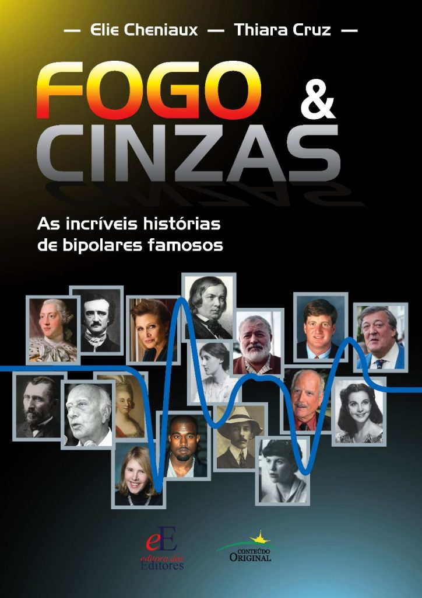

Biblioteca do autor

AS INCRÍVEIS HISTÓRIAS DE BIPOLARES FAMOSOS
O título faz referência a uma metáfora, criada pelo psiquiatra grego Athanasios Koukopoulos, que compara as fases de mania e de depressão do transtorno bipolar com Fogo & Cinzas, respectivamente. A obra aborda histórias de vida e do adoecimento mental de 17 celebridades que sofriam ou sofrem do transtorno, como Vicent Van Gogh, Alberto Santos Dumont, Edgar Allan Poe, Ernest Hemingway, Virginia Woolf, Ulysses Guimarães, Kanye West, entre outros..
FOGO & CINZAS: AS INCRÍVEIS HISTÓRIAS DE BIPOLARES FAMOSOS
Apesar de representar uma condição clínica muito grave, o transtorno bipolar tem sido associado a possíveis vantagens compensatórias, especialmente a criatividade. Este livro discute as histórias de vida e do adoecimento mental de 17 indivíduos famosos que sofriam ou sofrem de transtorno bipolar, artistas em sua maioria. São eles: Alberto Santos-Dumont, Carrie Fisher, Edgar Allan Poe, Ernest Hemingway, George III da Inglaterra, Kanye West, Kay Jamison, Maria I de Portugal, Patrick Kennedy, Richard Dreyfuss, Robert Schumann, Stephen Fry, Sylvia Plath, Ulysses Guimarães, Vincent van Gogh, Virginia Woolf e Vivien Leigh..
Embora a análise psiquiátrica de cada caso tenha sido feita de forma rigorosa do ponto de vista técnico, levando em consideração a psicopatologia clássica e os critérios diagnósticos mais modernos, o texto foi escrito em uma linguagem simples e acessível. Assim, esta obra é voltada não apenas para os estudantes e profissionais das áreas de psiquiatria e saúde mental, mas também para o público leigo em geral.
Tenho dedicado minha carreira ao estudo da fascinante e desafiadora doença bipolar. No decorrer dos anos, procurando auxiliar pacientes e seus familiares, fui me deparando com questões de grande importância lançadas neste livro. Muitas vezes o sucesso em diferentes áreas criativas como as artes, a ciência e o empreendedorismo depende de doses pouco usuais de audácia, desinibição, charme pessoal e mesmo carisma. Essas são características marcantes de pacientes em fase hipomaníaca ou mesmo hipertímica da doença bipolar. Poderíamos dizer que certos indivíduos, quando eufóricos, parecem “tocados pelo fogo”, usando as palavras da estudiosa e portadora da doença bipolar Kay Redfield Jamison. No decorrer da leitura do livro, me deparei com personagens célebres, escritores e artistas favoritos. É impossível resistir, por exemplo, às narrativas que envolvem as vicissitudes de Robert Schumann. Esse músico é apontado como um dos maiores mestres da melodia em música erudita. De fato, não há como evitar reminiscências da infância ouvindo-se Kinderszenen, um clássico desse autor. Já disse Beethoven que a música é mais profunda do que qualquer filosofia. De fato, a música de Robert Schumann nos remete à profundidade da nostalgia de tempos passados bem como de cenas de amor e contemplação. Seria parte desse contato profundo com o mundo emocional um resultado da doença bipolar? Vamos além, e analisando a biografia e obras de Virginia Woolf, verificamos um amálgama de intensas vivências pessoais, erudição e criatividade na sua forma mais intensa e disruptiva. Virgínia Wolf cometeu suicídio após uma carreira de grande sucesso literário. Ela foi um dos mestres da literatura moderna. Mas foi também uma vítima da doença bipolar não tratada. Curiosamente Virgínia Wolf e seu marido foram editores na Inglaterra da obra do professor alemão Sigmund Freud. Amigos em comum tentaram organizar um encontro de Virginia Woolf com o professor Freud. Esse encontro jamais ocorreu, e mesmo que tivesse ocorrido, a doença bipolar, embora descrita, ainda não apresentava nenhum tipo de tratamento eficaz. Virgínia Wolf foi tratada com dietas e descanso. Pouco lhe valeram esses tratamentos, e sua doença seguiu um curso de gravidade cada vez maior, culminando com o suicídio. E que dizer dos relatos biográficos e literários de Ernest Hemingway? Pois o grande autor de Por quem os sinos dobram sofria da doença bipolar. Cometeu suicídio, bem como seu pai e sua neta. Histórias como essas são tratadas com riqueza de detalhes e bibliografia de suporte ao longo do livro. Que obra adorável! Além de leitura obrigatória para profissionais que se dedicam à doença bipolar, a obra é também de grande valia para aqueles que apreciam a história da arte e a riqueza de detalhes da vida de seus protagonistas. Fica a pergunta que o livro trata ao longo de suas páginas: a doença bipolar seria afinal um facilitador da genialidade? Eu, como tantos outros, prefiro acreditar que existem seres humanos especiais e de talento incontestável, gênios. E genialidade não é doença. Mas os autores deixam a nós, leitores, com a “pulga atrás da orelha”... Seria a doença bipolar, em muitos casos, a centelha das grandes mentes criativas? Convido o leitor a deliciar-se nessas páginas de cultura e história da doença mental e seus tratamentos. Encontrei nas páginas desse livro boas doses de tratamentos que muito recomendo: cultura, ciência e humanismo.
Figuras públicas sempre tiveram seus feitos levados à população geral através da mídia, principalmente pelo potencial impacto na vida das pessoas por meio da participação em movimentos culturais, políticos, ou simplesmente por serem formadoras de opinião. Em "Fogo & Cinzas: as incríveis histórias de bipolares famosos" [1] o renomado psiquiatra Elie Cheniaux e a psicóloga Thiara Cruz trazem em 17 capítulos independentes a análise de histórias de figuras famosas sob a ótica da ciência da saúde mental, tendo como base comportamentos relatados, documentos oficiais, notícias e históricos médicos. Nesta obra, os autores assumem papel de “investigadores” e “historiadores”, buscando organizar os dados obtidos para relatar e enquadrar padrões comportamentais e de sintomas em determinada classificação diagnóstica. De leitura simples e fluida, o texto é acessível à população leiga na área, sem abrir mão do rigor científico na análise psicopatológica realizada. Durante a leitura, diversos relatos lembram os de pessoas comuns e nos fazem enxergar que a manifestação da doença psiquiátrica não ocorre de forma “tão diferente” entre a pessoa “comum,’’ e o famoso. Explico: “tão diferente”, pois o que diverge não é a manifestação da doença em si, mas os meios para colocar em prática as ideias de grandeza/delírios e os gastos exagerados, que podem passar despercebidos a depender da disponibilidade de recursos do indivíduo. A exemplo disso, podemos dizer que provavelmente Santos-Dumont não construiria 22 dirigíveis ao longo de sua vida se não fosse um herdeiro bastante rico. Estudos tentam relacionar, de forma indireta, a presença de transtorno bipolar e a criatividade, inteligência e sucesso de alguns indivíduos. Entretanto, durante a obra percebe-se que muitos daqueles famosos, provavelmente o seriam da mesma forma com ou sem o diagnóstico. Em muitos dos casos, a posição de destaque já poderia anteriormente ser atribuída à origem familiar, pois eram compostas por pessoas famosas de Hollywood, como Carrie Fisher, da política como na família Kennedy, da realeza como George III e Maria I e em outros casos o acesso a recursos educacionais e estímulos no desenvolvimento ou a oportunidade de “sentar-se à mesa com a sociedade intelectual” de artistas, escritores, inventores, como Santos-Dumont frequentemente tinha. Um dos grandes méritos do Fogo & Cinzas é trazer personalidades nascidas em diferentes épocas: desde o Rei George III em 1738, até Kanye West em 1977, mostrando que as manifestações psiquiátricas do transtorno eram semelhantes em todas as épocas. Contudo, também observamos que a forma como eram interpretadas e tratadas era diferente. No passado, maior ênfase era dada a diagnósticos diferenciais com condições clínicas, como porfiria, e terapêuticas de cunho moral, tratamentos purgativos e sangrias. Observamos a evolução da psiquiatria com o surgimento de medicações como o lítio e tratamentos como eletroconvulsoterapia, marcos importantes com grande impacto no desfecho do transtorno. Nota-se também a evolução dos sistemas classificatórios diagnósticos, sendo que muitos famosos receberam diagnóstico de psicose maníaco-depressiva, que possui algumas diferenças conceituais em comparação ao transtorno bipolar. Outro grande mérito da obra é a contribuição para a redução do estigma sobre o transtorno. Carrie Fisher, por exemplo, tornou-se ativista em prol da saúde mental, e tendo sido submetida à eletroconvulsoterapia, falou publicamente sobre essa forma de tratamento, buscando reduzir os preconceitos sobre o tema. Já Patrick Kennedy foi um grande apoiador de um projeto (depois tornado lei) que obrigava seguradoras de saúde a ampliarem a cobertura de tratamentos psiquiátricos. Por sua vez, o comediante Stephen Fry, que só aceitou iniciar tratamento dezessete anos após seu diagnóstico, hoje é presidente de uma instituição de caridade destinada a pessoas que sofrem de transtornos mentais. A psicóloga Kay Jamison, que sofre de transtorno bipolar, é coautora de um dos livros mais importantes sobre o assunto. Muitos famosos utilizaram de sua notoriedade para trazer maior visibilidade ao tema, contribuindo para a redução da psicofobia, mostrando a importância do tratamento e da necessidade dos sistemas de saúde olharem para o tema com maior atenção. Nesta obra, de maneira brilhante, Cheniaux e Thiara Cruz suscitam o debate sobre a possível relação entre o transtorno afetivo bipolar e uma maior criatividade, traçam um panorama histórico da classificação e tratamentos da comorbidade e mostram os avanços assistenciais e a visibilidade trazida pelas figuras da obra ao longo dos anos. O texto de fácil compreensão consegue acessar desde o leigo até o especialista em saúde mental. É uma obra que permite àqueles não familizarizados com o tema compreender características do adoecimento psíquico. Portanto, a popularização desta obra contribui de forma relavante para a redução da psicofobia.
Sobre os autores da resenha